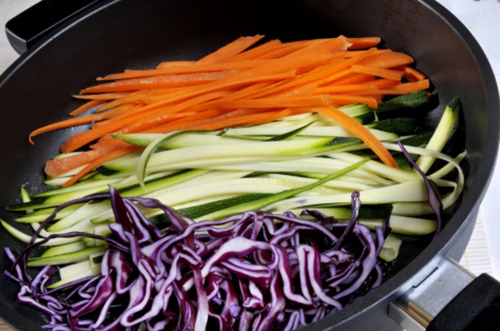
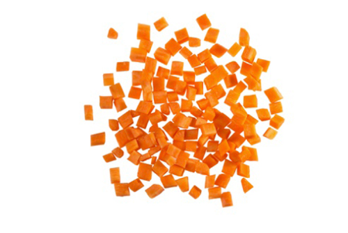

Task 1: Knives and Cutting Equipment
Click 'NEXT' to start.
Click 'NEXT' to start.

Consider the following characteristics when selecting knives and equipment:

As a chef in a professional kitchen, it is important that you can recognise and use a variety of different cuts. Many of these cuts are derived from traditional French cookery, which is why many of the terms are in French.
Mastering the various cutting techniques takes practice and skill, but once mastered they will enable you to use your skills confidently in the kitchen.
It is important to cut properly. The main reason is uniformity. Uniformity in cutting helps to ensure even, predictable cooking times.
Factors to consider when using knife skills and cutting techniques:
|
Tip |
The tip of the knife is at the opposite end to the handle, and is sharp and fairly thin. It is typically pointed, but there are some knives with ends that are cut off straight, rounded or at a slant. The tip is used for cutting small items, cutting food into thin strips and carving. It is also used for making incisions. |
|
Cutting edge |
The cutting edge is the bottom edge of the blade that runs from the heel to the tip of the blade. It is very sharp, and can be straight cut or serrated. The cutting edge is used to slice, cut or chop food items both large and small, with the middle of the blade being used most often. The blade edges are available with different grinds, which have different purposes. |
|
Heel |
The heel is approximately the last two inches of the blade's cutting edge at the opposite end from the tip. It is used for cutting thick or coarse items that require extra pressure or strength. It assists in making faster, more efficient cuts when the task calls for it. |
|
Rivets |
Metal rivets are used to secure the tang to the handle of the knife. To prevent irritation to the hand, the rivets should be completely smooth and lie flush with the surface of the handle. In addition, this will help prevent debris and microorganisms from collecting in the spaces between the handle and the rivets. |
|
Butt |
The butt end of the knife is at the opposite end of the tip. If the knife has a full tang, it is where the tang ends. |
|
Handle |
The handle is the part of the knife that holds the blade. The tang of the blade extends down in the handle to attach the blade to the handle. The tang is riveted into the handle, or is sometimes enclosed in a plastic or metal handle. It is important to get a good feel of the handle before purchasing a knife to be sure it fits your hand properly. If it is too big or small, it can result in inefficient use. |
|
Spine 
|
The spine is the edge opposite the cutting edge on the blade. It is thicker than the cutting edge and adds strength to the blade. It has a smooth, blunt edge to allow the user to grip it with thumb and forefinger, or to be able to apply pressure with fingers or the palm of a hand to add control to the task being performed. |
|
Bolster |
A bolster is a thick piece of metal (collar or shank) at the end of the blade, just before the handle. It generally runs the full length from the spine of the blade down to the cutting edge. The bolster, along with the tang, gives the knife balance, which provides for better control of the knife when cutting. It also provides a place for fingers to be placed for comfort, and provides protection from the blade. The bolster is an indication that the blade was forged rather than stamped. |
| Name | Basic shape | Traditional French size |
|---|---|---|
|
Diagonal: Oval slices |
Round |
Varies, but each piece should be the same size. Cut at an angle to the food. Generally 1/4ʺ thick |
|
Rondelle: Disk-shaped slices |
Round |
Varies, but each piece should be the same size. Cut perpendicular to the food |
|
Chiffonade  |
Thin strip |
Roll leafy greens or herbs into a tube; then cut into thin strips |
|
Paysanne 
|
Square, triangle, round |
Square, triangle, circle or half-round, depending on the vegetable shape. Pieces are uniformly 1/2ʺ x 1/2ʺ x 1/8ʺ |
|
Julienne 
|
Stick |
1 1/2ʺ to 2ʺ x 1/8ʺ x 1/8ʺ |
|
Baton or batonnet |
Stick |
2 to 2 1/2ʺ x 1/4ʺ x 1/4ʺ |
|
Brunoise |
Cube |
1/8ʺ x 1/8ʺ x 1/8ʺ start with julienne |
|
Small dice  |
Cube |
1/4ʺ x 1/4ʺ x 1/4ʺ |
|
Medium dice 
|
Cube |
1/2ʺ x 1/2ʺ x 1/2ʺ |
|
Large dice |
Cube |
3/4ʺ x 3/4ʺ x 3/4ʺ |
You have now reached the end of this unit and are ready to progress to the quiz. You can do this by clicking on the tabs below. Remember that you can revisit this unit to revise at any time.
There is no media content for this task.